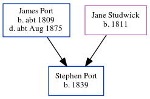

William Port 1841 -
[ Home ] | [ Calendar ] | [ Surnames Index ] | [ Errors ] | [ Family History ]The child of James Port (a barber) and Jane Studwick (a laundress), William Port, the second cousin three-times-removed on the mother's side of Nigel Horne, was born in Herne, Kent, England in 18411,2.
During his life, he was living at Herne Street in Herne on 6 Jun 18411 and on 30 Mar 18512.
Parents
- James was born c. 1809
- Jane Studwick was born in 1811
Citations
- 1841 England, Wales & Scotland Census - Findmypast (was age 0 and the son of the head of the household)
- 1851 England, Wales & Scotland Census - Findmypast (was age 10 and the son of the head of the household)
Media
1851 England, Wales & Scotland Census - GBC/1851/0005821727
Family Tree
Map
Generated by ged2site. Last updated on Jul 3, 2024